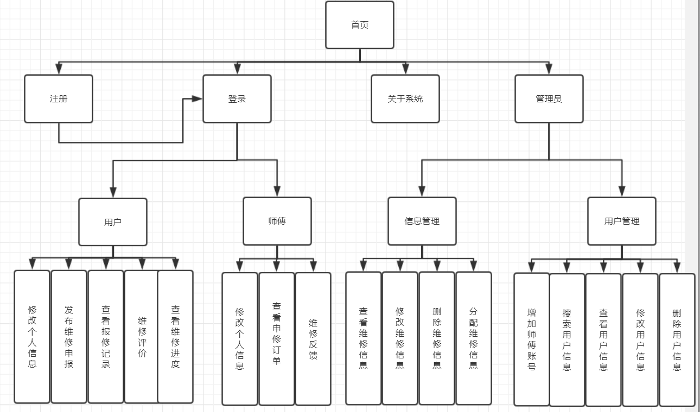

上海海洋大学校园维修系统
------------系统简介------------
高等院校设备齐全，设备一旦损坏，可能会影响到学生的生活起居和教学进度等重要事项，因此，及时对损坏的设备进行维修具有重要意义。
随着Internet的普及，越来越多的同学、老师，运用网络进行教学、授课、沟通，网络已成为日常生活中不可或缺的一部分。例如校园网已成为每个学校必备的信息基础设施，也是学校提高教学、科研及管理水平的重要途径和手段。因此，网络故障报修必然成为校园故障报修的重要辅助方式。
我们了解分析发现，上海海洋大学现有的报修途径为电话报修或微信群报修或上门报修，管理人员统一登记后，由维护人员进行维修。这会隐含地导致以下3方面问题：
①当报修频繁时，会占据管理员较多时间，增加人力资本；
②纸质登记可能遗失，降低师生满意度；
③存在误报的情况，增加了维修人员无效的工作量。
为了解决这些问题，同时考虑到移动生活和办公带来的便利，我们考虑利用所学知识和技能，开发“校园维修系统”，以方便师生报修，以及维修人员的及时维修，为提高校园的故障维修办公效率，探索信息化解决方案。
------------系统功能------------

对管理员而言：
1）系统以实现简单的管理员用户登录界面权限管理，可按学号（工号）或姓名查询师生的基本信息界面，还可以添加、修改或删除师生的信息；
2) 按宿舍号查询学生的住宿信息和对学生的住宿信息进行添加、更新、修改；
3）可以查看报修单和维修单、以及用户评价和任务安排，审核报修单和向维修人员发报修任务单，限制虚假报修用户发言，限制处于低评价的维修人员用户登录。
对学生用户而言：
系统为学生提供注册、基本信息的管理、故障报修、查看报修单和维修单、修改已有未处理的报修单、删除报修单、评价维修单以及催促维修进度的功能。
对维修人员而言：
系统为维修人员提供注册、基本信息的管理、查看任务安排、查看维修单报修单、填写维修状态（已修/未修/不能修）、查看用户评价的功能。